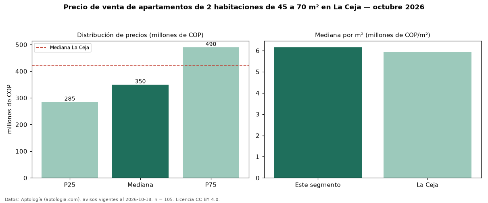

Precio de venta de apartamentos de 2 habitaciones de 45 a 70 m² en La Ceja — octubre 2026
En La Ceja, la mediana de precio de venta de apartamentos de 2 habitaciones de 45 a 70 m² es COP 350 millones, según 105 avisos vigentes. Eso es 9 % menos que la mediana de los apartamentos de 2 habitaciones en venta de La Ceja (COP 385 millones, n = 133); este segmento reúne el 79 % de esos avisos. Por metro cuadrado, la mediana es COP 6,15 millones/m² (n = 105), 1 % por encima de los apartamentos de 2 habitaciones en venta de La Ceja (COP 6,11 millones/m²). El área mediana anunciada es 60 m². La administración mediana declarada es COP 194.000 al mes (n = 45). El estrato más frecuente es 4 (39 % de los avisos con estrato). La mitad central de los avisos va de COP 285 millones a COP 490 millones (razón 1,7), una dispersión moderada. La mediana de todos los apartamentos en venta de La Ceja es COP 420 millones (−17 % de diferencia). Datos: Aptología (aptologia.com), CC BY 4.0 — https://www.aptologia.com/venta/la-ceja. Archivos: PDF, CSV con las cifras y gráfica PNG.

| Avisos únicos | 105 |
|---|---|
| Percentil 25 | COP 285.000.000 |
| Mediana | COP 350.000.000 |
| Percentil 75 | COP 490.000.000 |
| Mediana por m² | COP 6.153.846 |
Fuente: avisos vigentes de portales inmobiliarios recopilados por Aptología, deduplicados (mínimo 30 avisos únicos por celda). Precios pedidos, no cerrados. Fecha: 2026-10-18.